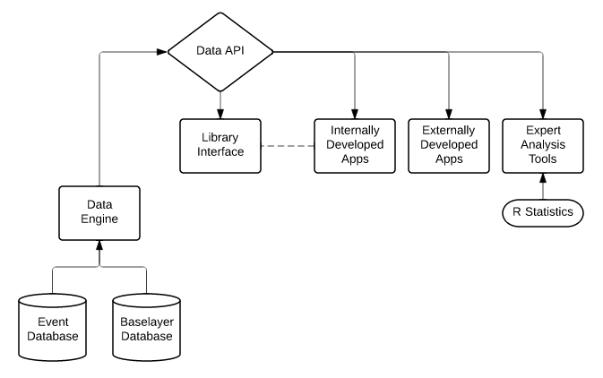

Your browser doesn't support the features required by impress.js, so you are presented with a simplified version of this presentation.
For the best experience please use the latest Chrome, Safari or Firefox browser.
BIDS thunder talk
Data Science and Ecological Data
Falk Schuetzenmeister
September 4, 2014
| Web Application Developer Geospatial Innovation Facility College of Natural Resources |
ecoengine.berkeley.edu
A RESTful API serving UC Berkeley's natural history data.
Time and location as organizing principles
Conceptual model
Example: data extraction and aggregation
Example: the application model
Domain specific problems
Resulting questions: Data science as web service?
Our data is not outragously big BUT we have to process our data within the request-response-cycle on the web (ideally within one second).
What data science technologies can be applied?
The work flows in our field need to be studied more thoroughly
What functionality can be effectively delivered by a RESTful API?
Example Search Engine
My goals at BIDS